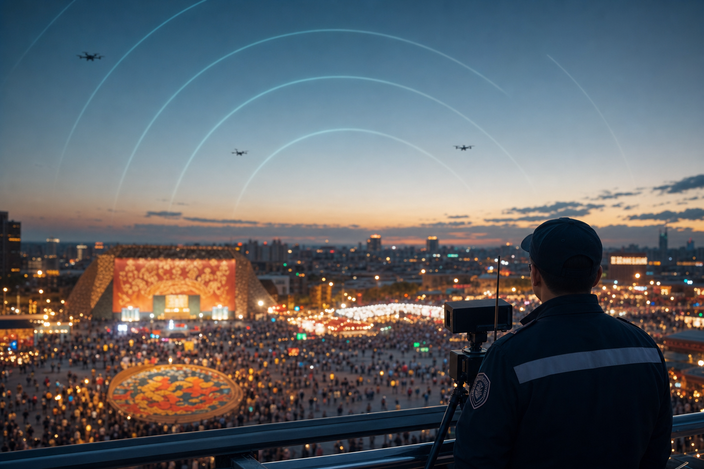

低空博览会开幕在即：产业加速时，城市低空治理跟得上吗
导读 本文面向公安及城市低空安全管理部门，以2026国际低空经济博览会开幕在即为切入，观察产业加速背景下，城市低空治理能力是否同步、缺口在哪里。
导语：展会临近，低空热度又要上台阶
据人民财讯7月17日报道，2026国际低空经济博览会将于7月22日至25日在国家会展中心（上海）举行。主题为「驭低空新势，启经济新篇」，展会总面积约6万平方米，汇聚400余家国内外参展企业，同期举办80余场高端论坛与大众互动活动。
展台上会有什么？整机、航电、材料、通信、感知、反制、适航验证……产业链条会铺得很全。
天上目标看得见吗？异常飞行定得了级吗？重大活动与日常空域管得住吗？
产业侧在加速展示「飞得开」。治理侧若不同步，「热闹」很容易变成「压力」。

大型活动场景下的低空值守需求（示意）
一 展会释放了什么信号：不只是卖设备
据上观新闻等公开报道，本届博览会由国家会展中心（上海）、东浩兰生集团和上海市国展集团共同主办，中国民用机场协会、中国航空学会、中国安全防范产品行业协会等作为特别合作单位参与。展会强调以新兴航空器为核心，打通「整机制造—核心配套—基建安全—产业服务」链条，并提出践行「管得住才能放得开」的安全发展理念。
对城市治理者，至少可以读出三层信号。
• 第一，产业进入「全链亮相」阶段。整机、动力、航电、材料、通信导航、感知监管、适航验证同台出现，说明行业不再只讲概念，而在拼可交付、可验证、可运行。
• 第二，安全能力被放进主叙事。公开材料把通信组网、感知监管、适航验证、运行保障与反制安防一并呈现，说明主办方清楚：没有底层安全支撑，规模化场景走不远。
• 第三，场景与大众互动并行。论坛、飞演、科普、招聘会同时出现，低空从专业圈层走向公众视野。公众关注度上升，黑飞、扰航、扰民投诉与舆情压力也会同步上升。
展会越热闹，越提醒城市：低空治理要从「专项活动」变成「常态能力」。
二 产业加速时，城市治理常卡在哪里？
展会看的是供给。城市管的是秩序。常见缺口并不神秘，往往就卡在三处。
• 第一，看得见设备，看不见体系。雷达、无线电、光电、便携反制枪可能都有，但不在同一套业务流程里，发现了却难定级、难调度、难复盘。
• 第二，管得了展会，管不了日常。重大活动可以临时加码通告与值守；日常投诉、校园周边、净空保护区、夜间扰民，才真正检验有没有全时感知与分级处置。
• 第三，法律有方向，本地缺抓手。新修订《民用航空法》已自2026年7月1日起施行，空域兼顾低空经济发展、推动建设监管服务平台等要求写进上位法。法律给确定性，但城市仍要自己回答：登记报备怎么纳管、异常目标怎么发现、处置链条怎么闭环。
产业展台可以展示「能飞」；城市治理必须证明「能管」。
三 给公安与城市管理者的三条观察
面对即将开幕的行业盛会，建议把注意力从「看了什么新产品」，转到「缺什么治理能力」。
• 第一，把「展会安全」与「城市安全」分开看、再连起来建。展馆内的演示与飞演是主办方与空管协同问题；城市行政区的日常低空秩序，才是公安与地方管理部门的主责。两者标准不同，但都需要感知与指挥协同。
• 第二，优先补「看见—定级—处置—留痕」闭环，而不是先堆新设备。多源探测要进平台，威胁要分级，处置要依法审慎，过程要可评可复盘。行业把这条链概括成「察 · 控 · 打 · 评」。
• 第三，把监管服务平台当成基础设施，而不是可选项。法律已点名推动建设民用低空飞行和应用相关监管服务平台。城市若不建统一业务系统，设备再多也难形成合力。

羽嘉科技「猎场一号」警用低空防务智能实战平台，正是面向公安日常场景把上述闭环做成可调度能力：兼容主流侦测反制设备，按业务流程支撑重大活动与常态值守。
低空经济越接近规模化，城市越需要可运转的治理操作系统。
结 看完展会，更要看回空域
2026国际低空经济博览会开幕在即，它会集中展示「飞得开」的产业势能。
但对公安与城市低空安全管理部门，更关键的判断只有一句：产业可以加速，治理不能滞后。
展台上看技术，空域里看能力。看得见、定得准、处置可控、过程可评，低空经济才能在安全轨道上走远。
—— 关于我们 ——
羽嘉科技，城市级低空安全解决方案提供商，
「猎场一号」警用低空防务智能实战平台研发者。
让低空管理从「被动应对」转向「主动防控」。
免责声明：本文相关信息引自公开渠道（人民财讯、上观新闻等，展会细节以主办方最新公布为准），仅供行业交流参考，不构成任何决策依据。如有侵权请联系删除。
使用说明：浏览器打开可预览。发公众号时按「配图/配图清单.md」上传 00–02。